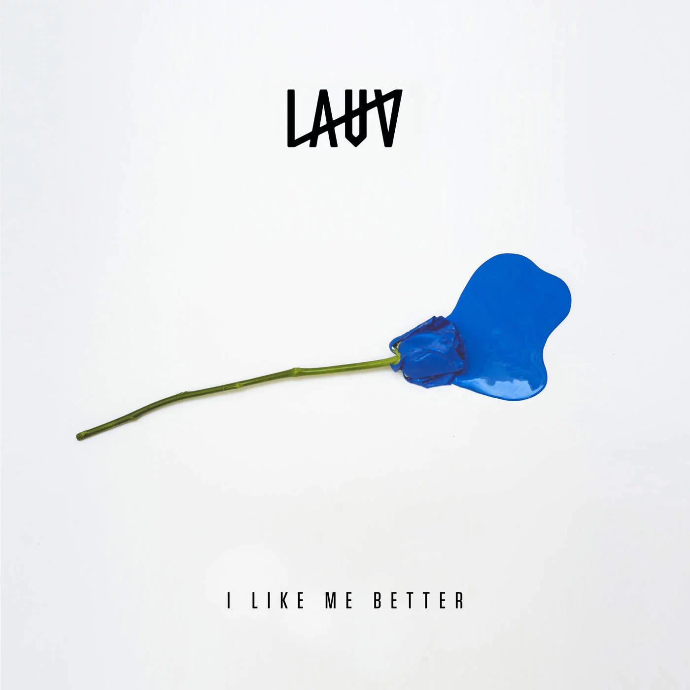

Ari Staprans Leff, mais conhecido pelo seu nome artístico Lauv, nascido em 8 de agosto de 1994 São Francisco, California,EUA, atualmente com 28 anos, é um cantor, compositor e produtor musical norte-americano. Seu EP de estria, Lost in the light, foi lançado em 2015.
Quando criança ele estava interessado em música e começou a aprender tocar piano e viola antes de aprender a tocar guitarra aos 11 anos de idade. Com 15 anos de idade, antes mesmo de ele ter qualquer tipo de relacionamento ele era obcecado por escrever canções de amor e separação.
Ele é mais conhecido por seus sings 'I like me Better' A canção foi inspirada por seu relacionamento que começou dois meses depois ele se mudou para Nova Iorque a fim de aprofundar seus estudos; e 'The Other'. seu gênero sendo pop; electropop, atualmente uma das músicas que esta no alge é 'WHO' também muito popular com a parcipação do BTS
